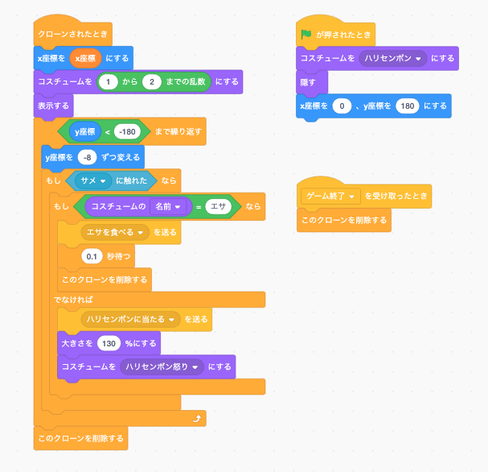
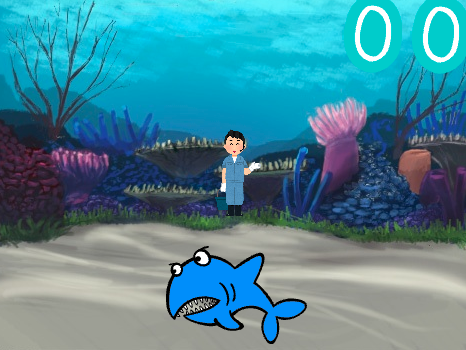
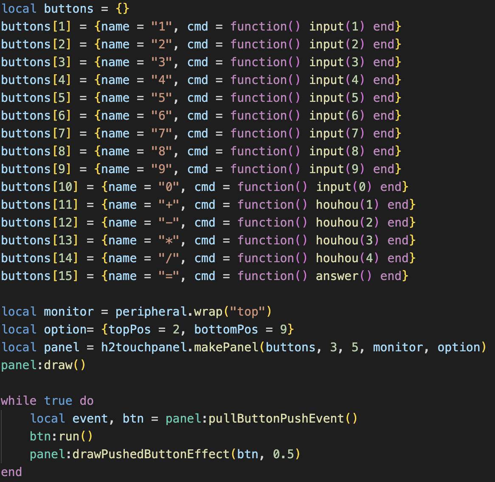
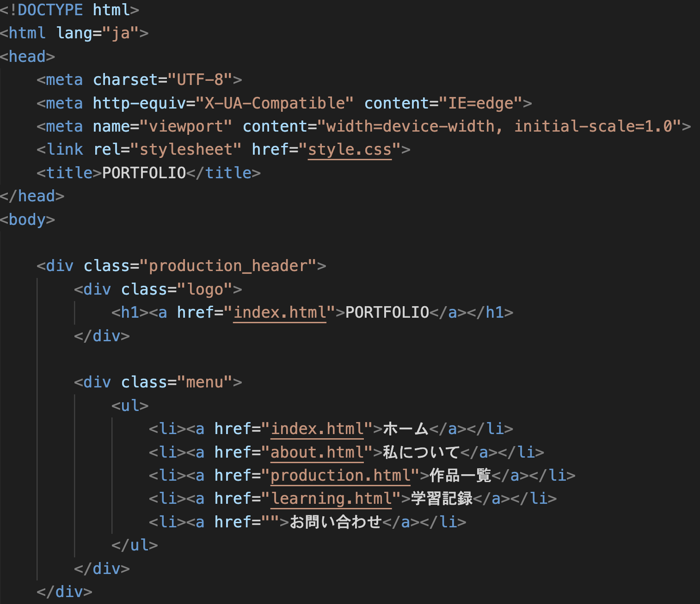
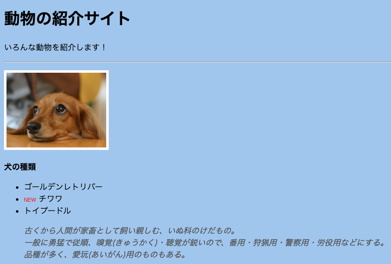

学習記録
スクラッチ


ブロックを組み立ててプログラミングの基礎を学習しました。
ジュニアプログラミング検定という検定にも挑戦し、1級を取得しました。
スクラッチは命令が日本語で書いてあり、それがブロック形式になっているので
プログラミングを習い始めたばかりの私でも、抵抗なくプログラミングに取り組むことが出来ました。
Minecrafプログラミング

lua言語を使ったプログラミングで、自動で家を建てるプログラムや
パスワードを使ってドアを開けるプログラムなどを作りました。
全て英語で記述し、構文の書き方やエラーの読み方なども学習しました。
エラーが英語で書いてあるのでかなり苦戦しましたが、誤字脱字によるエラーが
多かったので、正しくコードを打つ大切さを学びました。
HTML&CSS


HTMLとCSSという技術を使用し、ホームページを作る学習をしました。
簡単なサイト制作や模写を通して、ホームページ制作における基礎を学習しました。
Webクリエイター能力認定試験にも挑戦し、合格することが出来ました。